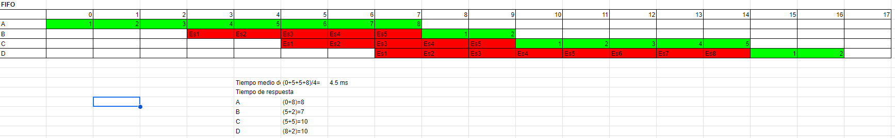
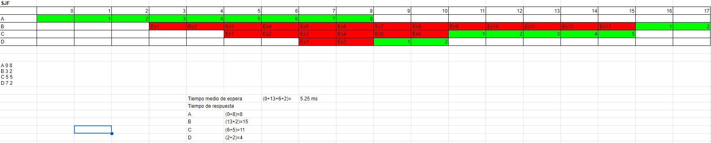

1. Un sistema operativo monoprocesador, ¿puede ser multitarea? Razona tu respuesta.
Si. Que un SO sea monoprocesador significa que utiliza solamente un procesador. Y un procesador puede tener varios núcleos que permite la multitarea.
2. Busca información en internet y completa la siguiente tabla:
| SO | Tiempo de respuesta | Nº de usuarios | Nº de procesadores | Nº de procesos |
|---|---|---|---|---|
| MS-DOS | Interactivo | Monousuario | Monoprocesador | Monotarea |
| Windows 98 | Interactivo | Monousuario | Monoprocesador | Multitarea |
| Windows XP profesional | Interactivo | Multiusuario | Monoprocesador | Multitarea |
| Linux Ubuntu 8.04 | ||||
| Windows 2008 Server |
3. Estás implantando el sistema informático de un aeropuerto ¿Cómo sería el sistema operativo que emplearías en función del tiempo de respuesta, del número de usuarios, del número de procesos, del número de procesadores y en función del trabajo en red? Razona todas tus respuestas.
En función del tiempo de respuestas sería a tiempo real. Al estar trabajando con vuelos de aviones, nos interesa tener información lo más fidedigna a la realidad del momento.
En función del número de usuarios sería multiusuarios. Para que varios trabajadores (controladores) puedan trabajar de forma simultánea.
En función del número de procesos sería multitarea. Para que se pueda trabajar con varios programas de forma «simultánea».
En función del número de procesadores. Podría ser multiprocesador, para que la capacidad de cálculo sea lo suficientemente buena para que se transmita de forma fidedigna la realidad. Pero también puede ser monoprocesador si, a la vez, también es un SO distribuido, para que pueda aprovechar la capacidad del hardware de los otros equipos.
4. Estás implantando el sistema informático de un gestor de reservas de pistas deportivas al que sólo tienen acceso los 5000 empleados de una empresa ¿Cómo sería el sistema operativo que emplearías en función del tiempo de respuesta, del número de usuarios, del número de procesos, del número de procesadores y en función del trabajo en red? Razona todas tus respuestas.
En función del tiempo de respuesta sería interactivo. Debido a que el tiempo de respuesta del trabajo no es tan exigente como trabajar en un aeropuerto, de esta manera ahorramos recursos.
En función del número de usuarios sería multiusuarios. Para que varios trabajadores puedan trabajar en el mismo SO de forma simultánea.
En función del número de procesos sería multitarea. Es importante que el SO permite trabajar con varios programas de trabajo de forma simultánea.
En función del número de procesadores sería monoprocesador. Debido a que el trabajo no exige que sea multiprocesador, optó porque sea monoprocesador para ahorrar recursos.
5. ¿Cuáles son los objetivos clásicos que intenta conseguir un planificador? ¿Es posible conseguir todos estos objetivos a la vez?
6. Utilizando los algoritmos de planificación FIFO y SJF, calcula el tiempo de espera y tiempo de respuesta de cada proceso. Realízalo gráficamente y calcúlalo de forma numérica. Calcula también el tiempo medio espera y de respuesta de cada algoritmo.


Tabla en una hoja de cálculo drive